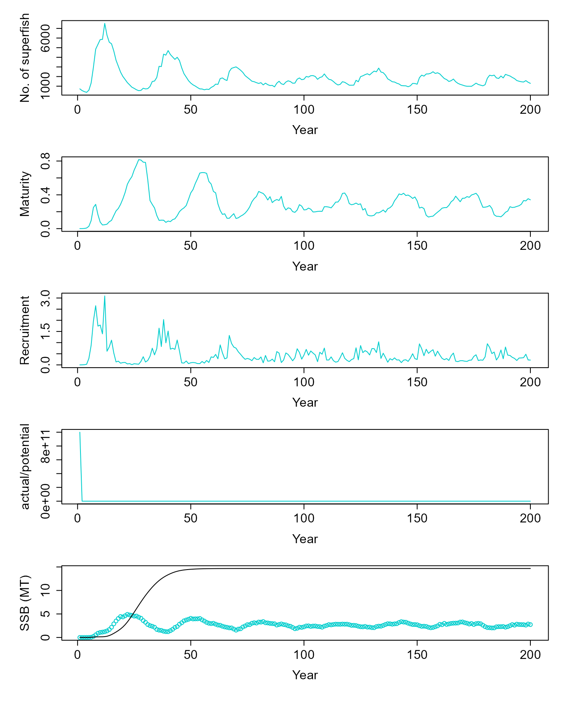
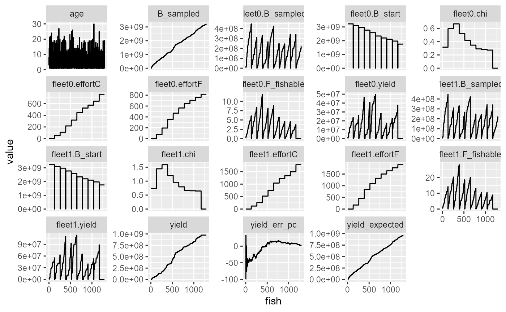
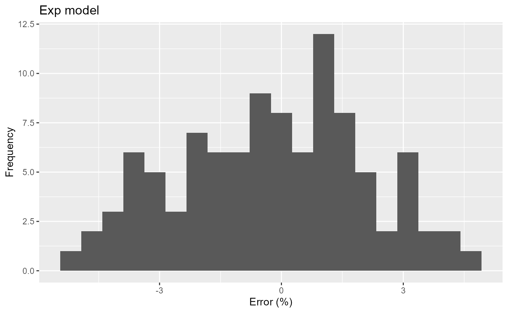
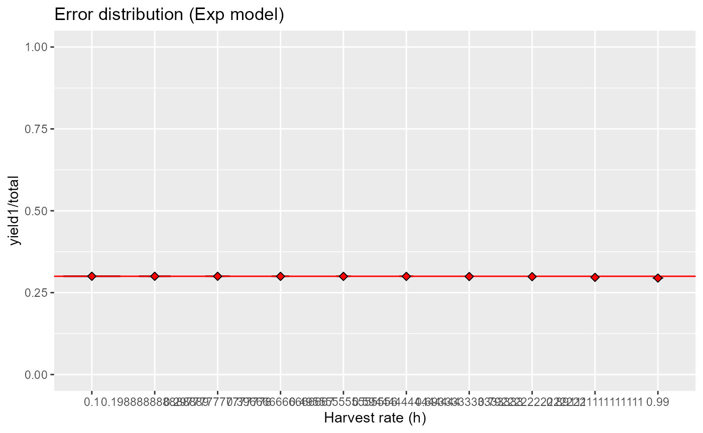
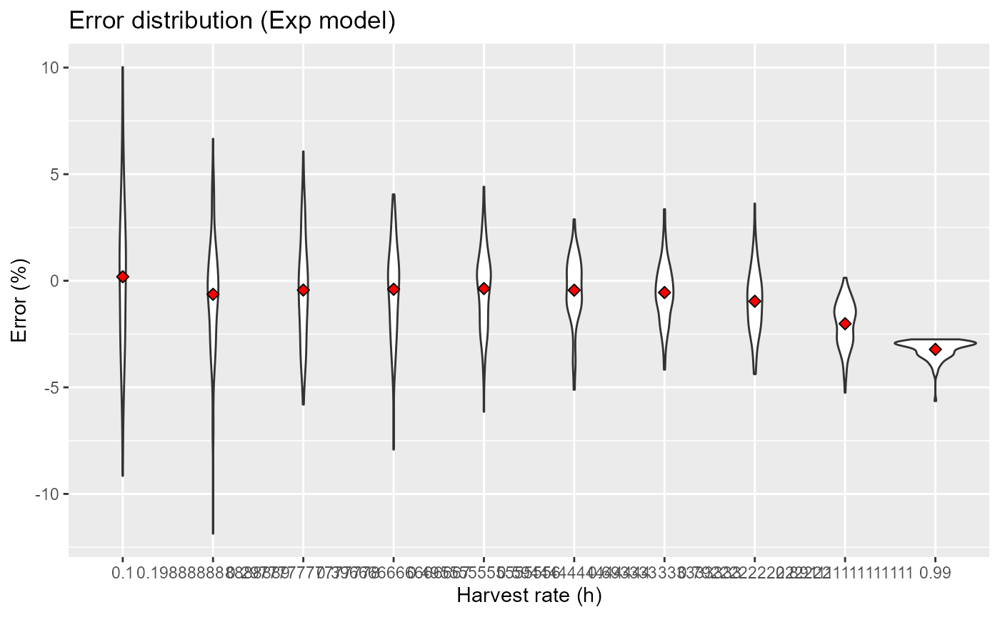
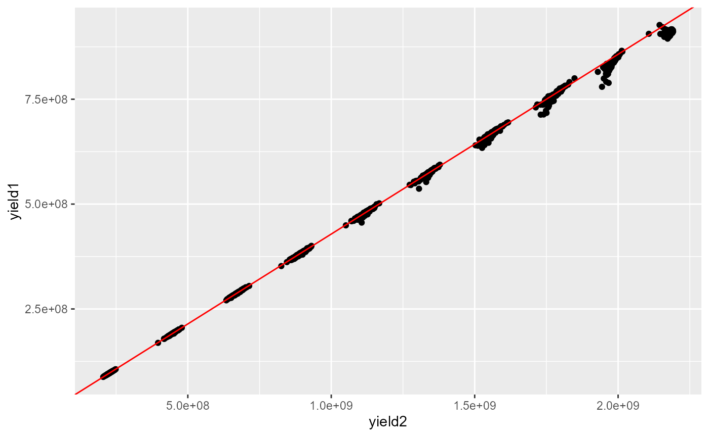

Effort control: fishing until quota is filled - stock implementation
Jaideep Joshi
28 October 2024
effort_control_stock_2fleets.Rmd
params_file = here::here("params/cod_params.ini")
params_file_fleet1 = here::here("params/fleet_2_params.ini")
params_file_fleet2 = here::here("params/fleet_3_params.ini")Initialize a population
To simulate a fished population, we start with creating a fish and constructing a population from it, as usual.
fish = new(Fish, params_file)
fish$setMortalityCurveEmpirical(here::here("data/naturalmort.spline.csv"))
pop = new(Stock, fish)
pop$readParams(params_file, F)## [1] 0
pop$superfish_size = 1e6 # Each superfish contains so many fish
pop$superfish_size## [1] 1e+06Perform Spinup
For simulating fishing, it is important for the population to start with a realistic state distribution. Therfore, we “spin-up” the population under no-fishing conditions.
v = pop$equilibriate_without_fishing(5.61, 200) |> matrix(nrow=200, byrow=T) |> as.data.frame() |> setNames(c("ssb", "tsb", "maturity", "nr", "dr", "nfish"))Let’s see how the population state looks after no-fishing equilibrium.
d = pop$get_state()
dist = table(d$age, d$length)
par(mfrow = c(5,1), mar=c(5,5,1,1), oma=c(1,1,1,1), cex.lab=1.5, cex.axis=1.5)
plot(v$nfish~seq(1,200,1), ylab="No. of superfish", xlab="Year", type="l", col=c("cyan3"))
plot(v$maturity~seq(1,200,1), ylab="Maturity", xlab="Year", type="l", col=c("cyan3"))
plot(I(v$nr/1e9)~seq(1,200,1), ylab="Recruitment", xlab="Year", type="l", col=c("cyan3"))
plot(v$dr~seq(1,200,1), ylab="actual/potential", xlab="Year", type="l", col=c("cyan3"))
res = simulate(0, 45, F)
matplot(cbind(v$ssb/1e9, res$summaries$SSB[1:200]/1e9), ylab="SSB (MT)", xlab="Year", col=c("cyan3", "black"), lty=1, type=c("p","l"), pch=1)
Set fishing parameters
Set a harvest proportion that will determine the fishing quota.
# selectivity
F1 = 0.6901
F2 = 0.06517
F3 = 68.81
F4 = 0.4151
F5 = 112.8
F6 = 0.4381674
lmin = 45
progress_names = c(
"age",
"B",
"B_sampled",
"yield",
"yield_expected",
"fleet0.chi",
"fleet0.chi_w",
"fleet0.B_sampled",
"fleet0.B_start",
"fleet0.yield",
"fleet0.F_fishable",
"fleet0.effortC",
"fleet0.effortF",
"fleet1.chi",
"fleet1.chi_w",
"fleet1.B_sampled",
"fleet1.B_start",
"fleet1.yield",
"fleet1.F_fishable",
"fleet1.effortC",
"fleet1.effortF"
)
empirical_F_file = ""
mode = "exp"
slope = 0
fleet1 = new(Fleet)
fleet1$readParams(params_file_fleet1, F)
if (empirical_F_file == ""){
fleet1$set_referenceFishingMortalityCurveLogistic(F1,F2,F3,F4,F5,F6,lmin)
} else {
fleet2$set_referenceFishingMortalityCurveEmpirical(empirical_F_file, lmin)
}
fleet1$par$control_model = mode
fleet1$par$chi0_scalar_slope = slope
fleet2 = new(Fleet)
fleet2$readParams(params_file_fleet2, F)
if (empirical_F_file == ""){
fleet2$set_referenceFishingMortalityCurveLogistic(F1,F2,F3,F4,F5,F6,lmin)
} else {
fleet2$set_referenceFishingMortalityCurveEmpirical(empirical_F_file, lmin)
}
fleet2$par$control_model = mode
fleet2$par$chi0_scalar_slope = slope
k_unfished = fleet1$biomassFishable(pop, 0, FALSE)
quota = 0.3 * k_unfished
F_fgf = -log(1-0.3)
fleet1$init_chi(pop, F_fgf*0.3, 5.61)
fleet2$init_chi(pop, F_fgf*0.7, 5.61)
out = get_fished_dry_run_wrapper(pop, list(fleet1, fleet2), c(quota*0.3, quota*0.7), 5.61, TRUE, TRUE)
df = as.data.frame(matrix(data = out, ncol=length(progress_names), byrow = T))
colnames(df) = progress_names
p = df %>%
dplyr::select(-fleet1.chi_w, -fleet0.chi_w) %>%
mutate(fish = 1:n()) %>%
mutate(yield_err_pc = (yield-yield_expected)/yield_expected*100) %>%
select(-B) %>%
pivot_longer(-fish) %>%
ggplot(aes(x=fish, y=value))+
geom_line()+
facet_wrap(~name, scales="free_y")
print(p)
Calculate error characteristics with 2 fleets
pc_error = function(i, mode, h){
# quota = h*ssb_nf
fleet1$par$control_model = mode
fleet2$par$control_model = mode
k_unfished = fleet1$biomassFishable(pop, 0, FALSE)
quota = h * k_unfished
F_fgf = -log(1-h)
fleet1$init_chi(pop, F_fgf*0.3, 5.61)
fleet2$init_chi(pop, F_fgf*0.7, 5.61)
out = get_fished_dry_run_wrapper(pop, list(fleet1, fleet2), c(quota*0.3, quota*0.7), 5.61, TRUE, FALSE)
df = as.data.frame(matrix(data = out, ncol=2, byrow = T))
colnames(df) = c("yield1", "yield2")
df %>%
mutate(yield = yield1 + yield2,
err = (yield-quota)/quota*100,
yield1pc = yield1/yield * 100,
yield2pc = yield2/yield * 100
)
}Try exponential model
pc_error(1, mode="exp", h=0.2)## yield1 yield2 yield err yield1pc yield2pc
## 1 191092033 445687336 636779368 -1.291752 30.00914 69.99086
niterations = 100
res_exp = tibble(i = 1:niterations) %>%
mutate(res = map(i, ~pc_error(.x, mode="exp", h=0.3))) %>%
unnest(res)
print(
res_exp %>%
ggplot(aes(x=err)) +
geom_histogram(bins=20) +
labs(title="Exp model", x="Error (%)", y="Frequency")
)
res = expand.grid(h = seq(0.1, 0.99, length.out=10), i = 1:niterations) |>
mutate(res = purrr::pmap(list(i, mode="exp", h), pc_error)) |>
unnest(res)
res |>
ggplot(aes(x=factor(h), y=yield1/(yield1+yield2))) +
geom_violin() +
geom_hline(yintercept = 0.3, col="red")+
stat_summary(fun=mean, geom="point", shape=23, size=2, fill="red") +
ylim(0,1)+
labs(x="Harvest rate (h)", y="yield1/total", title="Error distribution (Exp model)")
res |>
ggplot(aes(x=factor(h), y=err)) +
geom_violin() +
stat_summary(fun=mean, geom="point", shape=23, size=2, fill="red") +
labs(x="Harvest rate (h)", y="Error (%)", title="Error distribution (Exp model)")
res |>
ggplot(aes(x=yield2, y=yield1)) +
geom_point()+
geom_abline(slope = 3/7, intercept = 0, col="red")